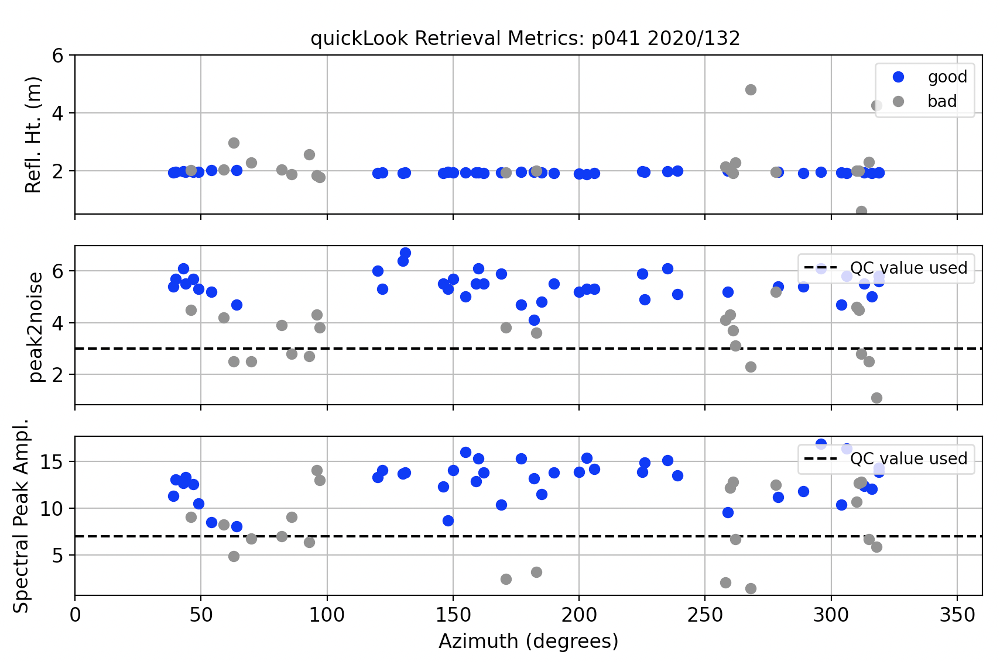

Marshall, Colorado, USA

Station Name: p041
Location: Boulder, CO, USA
Archive: UNAVCO
DOI: https://doi.org/10.7283/T5R49NQQ
Ellipsoidal Coordinates:
Latitude: 39.94949
Longitude: -105.19427
Height: 1728.842 m
Data Summary
The p041 antenna is ~2 meters above the soil surface. It is located at Marshall Mesa, Colorado. The site is relatively planar and free of obstructions. Since October 2018 the site has recorded multi-GNSS signals. Marshall Mesa has been featured in multiple publications on GNSS-IR:
To get a sense of whether an azimuth or elevation mask is appropriate,
check the Reflection Zone Mapping in the web app.
In the linked page, the reflection zones from 5 to 25 degree elevation angles are plotted as
colored ellipses surrounding the station.
Reproduce the Web App
p041 is one of the example cases for the GNSS-IR webapp. You can see from the title of the plot that the web app reproduces results for the year 2019, day of year 150, and L1 frequency. You can make something that looks similar to this using these commands:
rinex2snr p041 2019 150
and
quickLook p041 2019 150
Take a Quick Look at the Data
First make a SNR file:
rinex2snr p041 2020 132
Then use quickLook to analyze the reflection characteristics of the site (For details on quickLook output).
The default return is for the L1 frequency:
quickLook p041 2020 132

The code also summarizes these RH retrievals in terms of azimuth (x-axis) and QC metrics:

Now try looking at the periodogram for L2C:
quickLook p041 2020 132 -fr 20


Note that there are more colors in the L1 plots than in the L2C plots. That is the result of the fact that there are more L1 satellites than L2C satellites.
Now try L5:
quickLook p041 2020 132 -fr 5

The L5 signal has only been available on satellites launched after 2010, so there are fewer satellite tracks than either L1 or L2C.
The quickLook code has multiple options. For example, it is possible change the reflector height range:
quickLook p041 2020 132 -h1 0.5 -h2 10
To look at Glonass and Galileo signals, the SNR files must be created using the -orb gnss flag. If you have already made a file using only the GPS data, you will need the overwrite flag.
rinex2snr p041 2020 132 -orb gnss -overwrite True
Beidou signals are tracked at this site, but unfortunately the data are not available in the RINEX 2.11 file. They are very likely available in the RINEX 3 file, so you are encouraged to look there.
quickLook is meant to be a visual assessment of the spectral characteristics at a given site on a given day. For routine analysis, one must use gnssir.
Analyze the Data
We will start by setting up the analysis parameters. These are stored in a json file. In this case, the p041 RINEX data are multi-gnss, so you could set the options to allow all frequencies from all constellations:
make_json_input p041 39.94949 -105.19427 1728.842 -allfreq True -e1 5 -e2 25
We are going to concentrate on GPS-only, which is the default. We have set stricter QC values by setting the amplitude minimum to 8 and the peak 2 noise ratio to 3.2:
make_json_input p041 39.94949 -105.19427 1728.842 -e1 5 -e2 25 -peak2noise 3.2 -ampl 8
Here is a sample json file.
We are going to look at a subset of p041 data from 2019/2020 to look at changes due to snow accumulation. The series will begin doy 245 (2019) and end on doy 70 (2020).
rinex2snr p041 2019 245 -doy_end 365 -archive unavco
rinex2snr p041 2020 1 -doy_end 70 -archive unavco
Now run gnssir for 2019/2020:
gnssir p041 2019 1 -doy_end 366 -year_end 2020
The RH results from gnssir are stored in $REFL_CODE/2019/results/p041 and $REFL_CODE/2020/results/p041.
Typically a daily average is sufficient for climatology studies. To ensure the average is meaningful and not impacted by large outliers, a median filter (meters) is used and a minimum number of tracks is required. Here a median filter of 0.15 meter is used and 80 tracks are required. Either of these parameters can be changed depending on your site. In this particular example, I only used three GPS frequencies, L1, L2C, and L5.
daily_avg p041 .15 80
Three plots are created. All RH retrievals:
A summary of how many values are being used in the daily average:
And the daily RH average:
The location of the output files are printed to the screen.